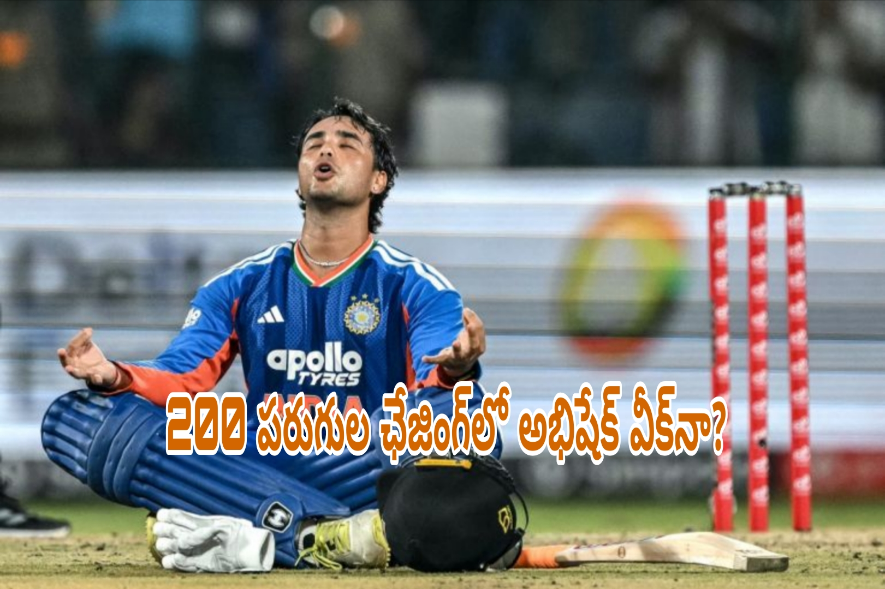

BS 360 NEWS | స్పోర్ట్స్
టీ20 క్రికెట్లో బ్యాటింగ్ అంటేనే దూకుడు. తొలి బంతి నుంచే బౌలర్లపై విరుచుకుపడుతూ బౌండరీలు, సిక్సర్లతో స్కోరు బోర్డును పరుగులు పెట్టించే ఆటగాళ్లలో టీమిండియా యువ ఓపెనర్ అభిషేక్ శర్మ ముందుంటాడు. క్రీజులో కుదురుకున్నాడంటే ప్రత్యర్థి బౌలర్లకు కష్టాలు తప్పవు. తక్కువ సమయంలోనే మ్యాచ్ స్వరూపాన్ని మార్చగల సత్తా అతడి సొంతం. అయితే భారీ లక్ష్యాలను ఛేదించే సమయంలో అభిషేక్ బ్యాటింగ్ ఎలా ఉంటోంది? ముఖ్యంగా 200కు పైగా పరుగుల లక్ష్యాన్ని అందుకోవాల్సిన పరిస్థితుల్లో అతడి ఆటతీరు జట్టుకు ఎంతవరకు ఉపయోగపడుతోంది? ఈ ప్రశ్న ఇప్పుడు క్రికెట్ అభిమానుల్లో ఆసక్తిని పెంచుతోంది.
అభిషేక్ శర్మ బ్యాటింగ్ను కేవలం పరుగుల సంఖ్యతో మాత్రమే అంచనా వేయలేం. అతడు ఎన్ని బంతుల్లో పరుగులు సాధించాడు? పవర్ప్లేలో జట్టుకు ఎలాంటి ఆరంభాన్ని ఇచ్చాడు? ప్రత్యర్థి బౌలర్లపై ఎంత ఒత్తిడి పెంచాడు? వంటి అంశాలను కూడా పరిశీలించాలి. అదే సమయంలో భారీ లక్ష్యాన్ని ఛేదిస్తున్నప్పుడు అతడి వికెట్ ఎంత కీలకమనే విషయాన్ని విస్మరించకూడదు.
తొలి బంతి నుంచే దూకుడు.. అభిషేక్ ప్రత్యేకత ఇదే!
ఎడమచేతి వాటం బ్యాటర్ అయిన అభిషేక్ శర్మ టీ20 క్రికెట్లో తనదైన దూకుడైన శైలితో గుర్తింపు తెచ్చుకున్నాడు. బౌలర్ ఎవరనే దానితో సంబంధం లేకుండా బంతిని బౌండరీకి తరలించాలనే ఆలోచనతో బ్యాటింగ్ చేయడం అతడి ప్రధాన బలం. ముఖ్యంగా పవర్ప్లేలో ఫీల్డింగ్ పరిమితులను ఉపయోగించుకుంటూ పరుగులు సాధించడంలో అతడికి మంచి నైపుణ్యం ఉంది.
సాధారణంగా టీ20 మ్యాచుల్లో తొలి ఆరు ఓవర్లు చాలా కీలకం. ఈ సమయంలో బౌండరీ వెలుపల ఫీల్డర్ల సంఖ్యపై పరిమితులు ఉంటాయి. ఈ అవకాశాన్ని సద్వినియోగం చేసుకున్న బ్యాటర్ వేగంగా పరుగులు సాధించగలడు. అభిషేక్ కూడా ఇదే వ్యూహంతో ప్రత్యర్థి జట్లపై ఒత్తిడి పెంచుతుంటాడు.
అతడు క్రీజులో ఉన్నప్పుడు బౌలర్లు తమ సాధారణ ప్రణాళికలను మార్చుకోవాల్సిన పరిస్థితి ఏర్పడుతుంది. లెంగ్త్ మార్చడం, వేగాన్ని తగ్గించడం, స్పిన్తో ప్రయోగాలు చేయడం వంటి వ్యూహాలను అనుసరిస్తారు. దీనివల్ల మరో ఎండ్లో ఉన్న బ్యాటర్కు కూడా పరుగులు సాధించే అవకాశాలు పెరుగుతాయి.
అయితే ఈ తరహా బ్యాటింగ్లో ప్రమాదం కూడా ఉంటుంది. దూకుడుగా ఆడే క్రమంలో వికెట్ కోల్పోయే అవకాశాలు ఎక్కువగా ఉంటాయి. అందుకే అభిషేక్ వంటి ఆటగాళ్ల విషయంలో స్ట్రైక్ రేట్తోపాటు నిలకడను కూడా పరిశీలించడం అవసరం.

200 ప్లస్ టార్గెట్ వచ్చినప్పుడు పరిస్థితి ఎందుకు మారుతుంది?
టీ20 క్రికెట్లో 200 పరుగుల లక్ష్యం ఒకప్పుడు చాలా పెద్ద స్కోరుగా కనిపించేది. కానీ ప్రస్తుత బ్యాటింగ్ ధోరణుల్లో భారీ స్కోర్లు నమోదవుతున్నాయి. ఫ్లాట్ పిచ్లు, చిన్న బౌండరీలు, బ్యాటర్ల దూకుడు వంటి అంశాలు స్కోరింగ్ వేగాన్ని పెంచుతున్నాయి.
అయితే 200కు పైగా పరుగులను ఛేదించడం అంటే ప్రతి ఓవర్లో భారీగా పరుగులు సాధించడమే కాదు. వికెట్లను కాపాడుకుంటూ అవసరమైన రన్రేట్ను నియంత్రణలో ఉంచుకోవడం కూడా అంతే ముఖ్యం.
ఉదాహరణకు, ఒక జట్టు 210 పరుగుల లక్ష్యంతో బరిలోకి దిగిందనుకుందాం. 20 ఓవర్లలో లక్ష్యాన్ని అందుకోవాలంటే ఓవర్కు సగటున 10.5 పరుగులు సాధించాలి. మొదటి కొన్ని ఓవర్లలోనే వికెట్లు పడిపోతే మిగిలిన బ్యాటర్లపై ఒత్తిడి పెరుగుతుంది. అదే మంచి ఆరంభం లభిస్తే చివరి ఓవర్లలో లక్ష్యాన్ని అందుకోవడం సులభమవుతుంది.
ఇక్కడే అభిషేక్ పాత్ర కీలకంగా మారుతుంది. అతడు తొలి ఆరు ఓవర్లలో వేగంగా పరుగులు సాధిస్తే జట్టు ఛేదనకు బలమైన పునాది ఏర్పడుతుంది. కానీ తక్కువ స్కోరుకే ఔటైతే మిగిలిన బ్యాటర్లు కొత్తగా క్రీజులోకి వచ్చి పరిస్థితులకు అలవాటు పడాల్సి ఉంటుంది.
గణాంకాలు ఏం చెబుతున్నాయి?
అభిషేక్ శర్మ టీ20 అంతర్జాతీయ క్రికెట్లో వేగంగా పరుగులు సాధించే బ్యాటర్లలో ఒకడిగా గుర్తింపు పొందాడు. క్రిక్బజ్లో ప్రచురించిన ఒక విశ్లేషణలో అతడి టీ20 అంతర్జాతీయ కెరీర్ స్ట్రైక్ రేట్ 194.74గా, బ్యాటింగ్ సగటు 37.05గా పేర్కొన్నారు. ఈ గణాంకాలు ప్రచురణ సమయానికి సంబంధించినవి. తాజా మ్యాచ్లతో మారవచ్చు.
మరిన్ని వివరాల కోసం క్రిక్బజ్ విశ్లేషణను చూడండి.
దాదాపు 195 స్ట్రైక్ రేట్ అంటే ప్రతి 100 బంతులకు సుమారు 195 పరుగులు సాధించే వేగంతో అతడు బ్యాటింగ్ చేస్తున్నాడని అర్థం. టీ20 ఫార్మాట్లో ఇది వేగవంతమైన బ్యాటింగ్కు నిదర్శనం.
అయితే స్ట్రైక్ రేట్ ఎక్కువగా ఉండటం, ప్రతి ఛేదనలోనూ విజయం సాధించడం రెండూ ఒకటి కావు. బ్యాటర్ వ్యక్తిగతంగా వేగంగా పరుగులు సాధించినప్పటికీ జట్టు మొత్తం లక్ష్యాన్ని చేరుకోకపోవచ్చు. అదే విధంగా తక్కువ బంతుల్లో చేసిన 30 లేదా 40 పరుగులు కూడా మ్యాచ్ ఫలితాన్ని మార్చగలవు.
అభిషేక్ బ్యాటింగ్ను విశ్లేషించేటప్పుడు అతడు ఎంత వేగంగా పరుగులు సాధిస్తున్నాడనే అంశంతోపాటు, అతడి ఇన్నింగ్స్ జట్టు విజయావకాశాలను ఎలా ప్రభావితం చేసిందనేది కూడా పరిశీలించాలి.
ముఖ్యంగా 200కు పైగా లక్ష్యాలను ఛేదించిన మ్యాచుల్లో అభిషేక్ ప్రదర్శనను నిర్ధారించాలంటే, ఆ మ్యాచుల్లో అతడు ఎదుర్కొన్న బంతులు, చేసిన పరుగులు, ఔటైన సమయం, జట్టు తుది ఫలితం వంటి వివరాలను విడిగా పరిశీలించాలి. మ్యాచ్వారీ గణాంకాలు లేకుండా అతడు అన్ని భారీ ఛేదనల్లో విఫలమవుతున్నాడని చెప్పడం సరైన విశ్లేషణ కాదు.
అభిషేక్ వేగం జట్టుకు ఎంతవరకు ఉపయోగపడుతోంది?
టీ20 క్రికెట్లో ఓపెనర్ల బాధ్యత కేవలం ఎక్కువ పరుగులు చేయడం మాత్రమే కాదు. ప్రత్యర్థి బౌలర్లపై మొదటి నుంచే ఒత్తిడి పెంచడం కూడా వారి ముఖ్యమైన బాధ్యత.
అభిషేక్ ఈ విషయంలో జట్టుకు ఉపయోగపడగలడు. అతడు పవర్ప్లేలో బౌండరీలు సాధిస్తే ప్రత్యర్థి కెప్టెన్ ఫీల్డింగ్ మార్పులు చేయాల్సి వస్తుంది. బౌలర్లు తమ లైన్, లెంగ్త్పై మరింత జాగ్రత్త వహించాల్సి ఉంటుంది. ఈ పరిణామాలు జట్టు స్కోరింగ్ వేగాన్ని పెంచేందుకు దోహదపడతాయి.
కానీ ప్రతి మ్యాచ్లో ఒకే తరహా ఆరంభం లభించదు. కొన్ని పిచ్లపై బంతి బ్యాట్పైకి సులభంగా వస్తుంది. మరికొన్ని పిచ్లపై బంతి నెమ్మదిగా రావడం, అదనపు బౌన్స్ ఉండటం లేదా స్పిన్కు అనుకూల పరిస్థితులు ఉండటం వల్ల బ్యాటింగ్ కష్టమవుతుంది.
అలాగే ప్రత్యర్థి జట్లు కూడా అభిషేక్ ఆటతీరును అధ్యయనం చేస్తుంటాయి. అతడు ఏ బంతులను దూకుడుగా ఆడుతున్నాడు? ఏ ప్రాంతాల్లో షాట్లు ఆడేందుకు ఇష్టపడుతున్నాడు? ఎలాంటి బౌలింగ్కు ఇబ్బంది పడుతున్నాడు? వంటి అంశాలను గుర్తించి ప్రణాళికలు రూపొందిస్తాయి.
ఇలాంటి పరిస్థితుల్లో ఒకే రకమైన దూకుడును కొనసాగించడం కష్టమవుతుంది. అవసరమైనప్పుడు సింగిల్స్ తీసుకోవడం, స్ట్రైక్ను మార్చుకోవడం, బౌలర్ తప్పిదాల కోసం ఎదురుచూడడం కూడా బ్యాటర్కు అవసరం.
అభిషేక్ తన సహజమైన దూకుడును కొనసాగిస్తూనే పరిస్థితులకు అనుగుణంగా ఆడగలిగితే భారీ లక్ష్యాల ఛేదనలో మరింత ప్రభావం చూపే అవకాశం ఉంటుంది.
వికెట్ విలువను గుర్తించడం అవసరమా?
టీ20 క్రికెట్లో దూకుడుగా ఆడటం తప్పు కాదు. ఆధునిక ఆటలో భారీ షాట్లు ఆడగల సామర్థ్యం ఉన్న బ్యాటర్లకు ప్రత్యేక స్థానం ఉంది. అయితే ఏ సమయంలో ఎంత రిస్క్ తీసుకోవాలనేది మ్యాచ్ పరిస్థితులపై ఆధారపడి ఉంటుంది.
పవర్ప్లేలో జట్టు మంచి రన్రేట్తో ముందుకు సాగుతుంటే ఒక బ్యాటర్ అనవసరమైన రిస్క్ తీసుకోవాల్సిన అవసరం ఉండకపోవచ్చు. అదే సమయంలో రన్రేట్ గణనీయంగా పెరిగి ఉంటే బౌండరీలు సాధించేందుకు ప్రయత్నించాల్సి ఉంటుంది.
అభిషేక్ విషయంలో కూడా ఇదే సూత్రం వర్తిస్తుంది. బౌలర్ వేసిన ప్రతి బంతినీ భారీ షాట్గా మార్చడానికి ప్రయత్నించకుండా, తనకు అనుకూలమైన బంతులను ఎంచుకుని దాడి చేయడం అతడికి ఉపయోగపడుతుంది.
మరో ముఖ్యమైన అంశం భాగస్వామ్యం. ఓపెనర్ ఒక ఎండ్లో దూకుడుగా ఆడుతుంటే మరో బ్యాటర్ పరిస్థితులను అర్థం చేసుకుంటూ ఇన్నింగ్స్ను ముందుకు తీసుకెళ్లవచ్చు. ఇద్దరి మధ్య సమన్వయం ఉంటే జట్టు వికెట్లను కోల్పోకుండా వేగంగా పరుగులు సాధించగలదు.
అందుకే అభిషేక్ వ్యక్తిగత స్కోరును మాత్రమే కాకుండా, అతడు క్రీజులో ఉన్న సమయంలో జట్టు సాధించిన పరుగులు, పడిన వికెట్లు, భాగస్వామ్యాలను కూడా పరిగణనలోకి తీసుకోవాలి.
భారీ ఛేదనల్లో మెరుగుపడాలంటే ఏం చేయాలి?
అభిషేక్ శర్మ వంటి దూకుడైన బ్యాటర్ తన ఆటతీరును మరింత మెరుగుపరుచుకోవడానికి కొన్ని అంశాలపై దృష్టి పెట్టవచ్చు.
మొదటిది బంతిని ఎంపిక చేసుకోవడం. బౌలర్ వేసిన ప్రతి బంతినీ బౌండరీకి తరలించాలనే ప్రయత్నం చేయకుండా, తనకు అనుకూలమైన బంతులను గుర్తించడం ముఖ్యం.
రెండోది ఇన్నింగ్స్ను నిర్మించుకోవడం. తొలి కొన్ని బంతుల్లోనే భారీ షాట్లు ఆడటం అతడి సహజ శైలి అయినప్పటికీ, పిచ్ పరిస్థితులు అనుకూలంగా లేకపోతే కొంత సమయం తీసుకుని ఆడటం కూడా ఉపయోగపడుతుంది.
మూడోది స్పిన్, పేస్ బౌలింగ్కు అనుగుణంగా వ్యూహాలను మార్చుకోవడం. ప్రత్యర్థి బౌలర్లు వేగాన్ని తగ్గించినప్పుడు లేదా లైన్ మార్చినప్పుడు ప్రత్యామ్నాయ షాట్లను ఎంచుకోవడం అవసరం.
నాలుగోది మ్యాచ్ పరిస్థితులను అర్థం చేసుకోవడం. లక్ష్యం ఎంత ఉంది? ఎన్ని ఓవర్లు మిగిలి ఉన్నాయి? ఎన్ని వికెట్లు చేతిలో ఉన్నాయి? రన్రేట్ ఎంత అవసరం? వంటి అంశాలను దృష్టిలో పెట్టుకుని ఆడితే అనవసరమైన రిస్క్ను తగ్గించుకోవచ్చు.
అయితే ఇవి అభిషేక్లో తప్పనిసరిగా లోపాలున్నాయనే అర్థం కాదు. ఏ దూకుడైన బ్యాటర్కైనా పరిస్థితులకు అనుగుణంగా ఆటను మార్చుకోవడం ఒక ముఖ్యమైన నైపుణ్యం.
అభిషేక్పై విమర్శలు సమంజసమేనా?
ఒక ఆటగాడు కొన్ని మ్యాచుల్లో తక్కువ స్కోరుకే ఔటైతే అతడి ప్రదర్శనపై చర్చ జరగడం సహజం. ముఖ్యంగా భారీ లక్ష్యాన్ని ఛేదించే సమయంలో ఓపెనర్ వికెట్ కోల్పోతే అభిమానులు నిరాశ చెందుతారు. ఎందుకంటే ఇన్నింగ్స్ ప్రారంభంలోనే జట్టుకు వేగాన్ని అందించాల్సిన బాధ్యత అతడిపై ఉంటుంది.
కానీ కొన్ని ఇన్నింగ్స్ ఆధారంగా ఆటగాడి మొత్తం సామర్థ్యాన్ని అంచనా వేయడం సరైన పద్ధతి కాదు. ప్రత్యర్థి బౌలింగ్ నాణ్యత, పిచ్ పరిస్థితులు, లక్ష్యం, మ్యాచ్ ఒత్తిడి వంటి అంశాలను కూడా పరిగణనలోకి తీసుకోవాలి.
అభిషేక్ అంతర్జాతీయ టీ20ల్లో వేగంగా పరుగులు సాధించగలడని గణాంకాలు సూచిస్తున్నాయి. అదే సమయంలో భారీ ఛేదనల్లో అతడి ప్రదర్శనను ప్రత్యేకంగా అంచనా వేయాలంటే, మొదటి ఇన్నింగ్స్లో బ్యాటింగ్ చేసిన మ్యాచులు, లక్ష్యాన్ని ఛేదించిన మ్యాచులు, ముఖ్యంగా 200కు పైగా లక్ష్యాలు ఉన్న మ్యాచులను వేర్వేరుగా పరిశీలించాలి.
అలాంటి సమగ్ర విశ్లేషణ లేకుండా అతడికి 200 ప్లస్ టార్గెట్ వచ్చినప్పుడు ఇబ్బందులు తప్పవని తేల్చిచెప్పడం తొందరపాటు అవుతుంది.
టీమిండియాకు అభిషేక్ ఎందుకు కీలకం?
భారత టీ20 జట్టులో దూకుడుగా బ్యాటింగ్ చేయగల ఆటగాళ్లకు కీలకమైన పాత్ర ఉంటుంది. ముఖ్యంగా ఓపెనర్లు వేగంగా పరుగులు సాధిస్తే మిడిలార్డర్పై ఒత్తిడి తగ్గుతుంది. చివరి ఓవర్లలో భారీ షాట్లు ఆడేందుకు జట్టుకు మరింత స్వేచ్ఛ లభిస్తుంది.
అభిషేక్ తన సహజమైన దూకుడుతో ఈ బాధ్యతను నిర్వర్తించగలడు. అతడు ఎక్కువసేపు క్రీజులో ఉంటే ప్రత్యర్థి జట్టు బౌలింగ్ ప్రణాళికలు దెబ్బతినే అవకాశం ఉంది. అయితే జట్టు విజయానికి ఒక ఆటగాడి ప్రదర్శన మాత్రమే సరిపోదు. మిగిలిన బ్యాటర్లు, బౌలర్లు కూడా తమ బాధ్యతలను సక్రమంగా నిర్వర్తించాలి.
టీ20 క్రికెట్లో ఒక్క ఓవర్ మ్యాచ్ గమనాన్ని మార్చగలదు. అదే విధంగా ఒక కీలక వికెట్ కూడా జట్టు విజయావకాశాలను ప్రభావితం చేయగలదు. అందుకే అభిషేక్ వంటి ఆటగాళ్ల నుంచి జట్టు ఆశించేది వేగంగా పరుగులు సాధించడమే కాకుండా, సాధ్యమైనంత వరకు ఆ ఆరంభాన్ని పెద్ద ఇన్నింగ్స్గా మార్చడం.
తుది మాట
అభిషేక్ శర్మ బ్యాటింగ్లో దూకుడు అతడి ప్రధాన బలం. తక్కువ సమయంలో ఎక్కువ పరుగులు సాధించగల సామర్థ్యం అతడిని టీ20 క్రికెట్లో ప్రత్యేకమైన ఆటగాడిగా నిలబెడుతోంది. అయితే 200కు పైగా లక్ష్యాలను ఛేదించే సమయంలో అతడి ప్రదర్శనను అంచనా వేయడానికి విడివిడిగా ఉన్న మ్యాచ్ గణాంకాలను పరిశీలించడం అవసరం.
అతడు భారీ లక్ష్యాల ఛేదనలో తరచూ విఫలమవుతున్నాడనే వాదనను నిర్ధారించడానికి తగిన మ్యాచ్వారీ ఆధారాలు అవసరం. అదే సమయంలో వేగంగా పరుగులు సాధిస్తున్నాడనే కారణంతో అతడి ఆటలో మెరుగుపరుచుకోవాల్సిన అంశాలు లేవని కూడా చెప్పలేం.
అభిషేక్ తన దూకుడును కొనసాగిస్తూనే పరిస్థితులకు తగ్గట్టుగా ఇన్నింగ్స్ను నిర్మించుకోగలిగితే, భారీ లక్ష్యాల ఛేదనలో టీమిండియాకు మరింత కీలకమైన ఆటగాడిగా మారే అవకాశం ఉంది.